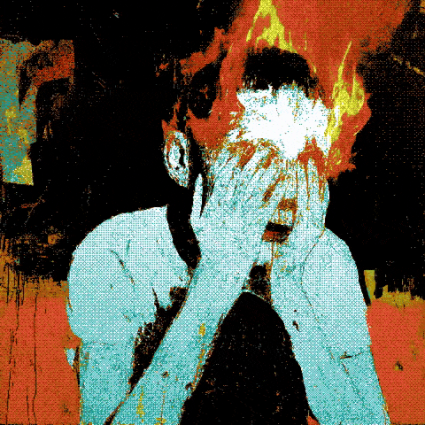
"All That Is Hidden Shall Be Witnessed"

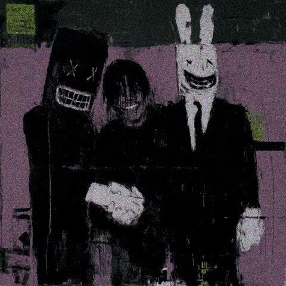
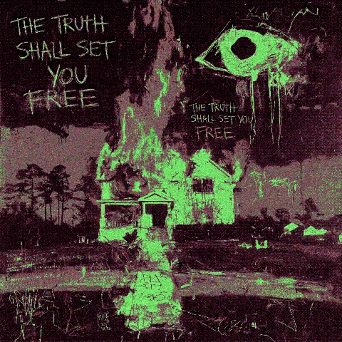
At ██:██ hours, monitoring station ███████ detected an unscheduled broadcast originating from coordinates that do not correspond to any known geographic location. The signal contained visual data of ████████████████████ nature. All personnel who viewed the raw feed were subsequently ████████████████. This report has been filed in accordance with Protocol ██.
Recovery teams dispatched to ████████ found no structural damage but reported a persistent sensation of █████████████████████████████████. Cameras recovered from the site contained ███ hours of footage that predates their manufacture date by ██ years.
Recommend immediate escalation to █████████████. Do not disseminate. Do not archive. Do not look directly at the footage.
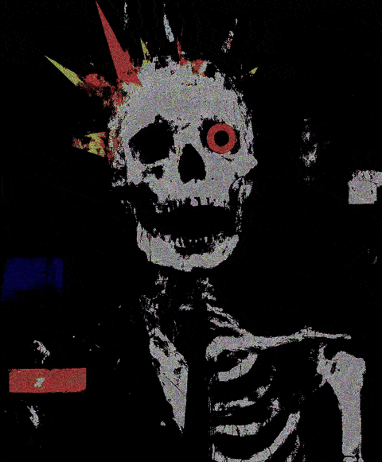
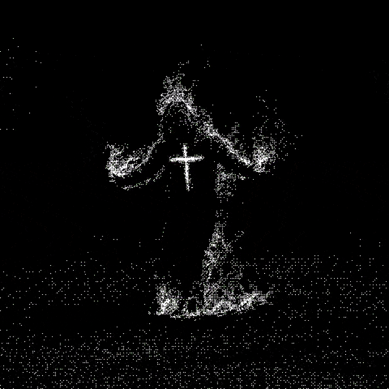
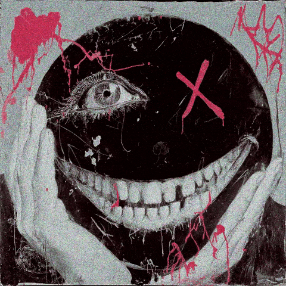
"Something entered the frame that was not there when we began recording. We checked every angle. There were no blind spots. There was nowhere it could have come from. There was nowhere it could have gone."— Station Operator, final entry before disappearance
"The footage does not end. We have been watching it for eleven days. Every time it appears to finish, it begins again — slightly different. The room is always the same. The figure is always facing away. Except on the third viewing of each cycle. On the third viewing, it turns."— Research team communiqué, dated three weeks after the facility was sealed
"I have watched it more times than I can count. I no longer know which memories are mine and which belong to whatever is in the recording. I am writing this as a warning. I am writing this as a record. I do not know if I will remember writing this tomorrow."— Handwritten note found on the desk. No author identified.
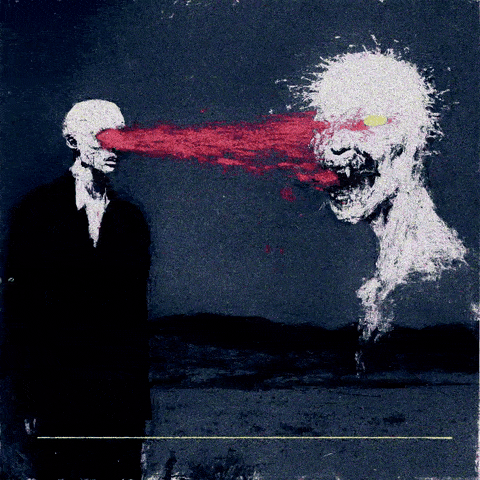
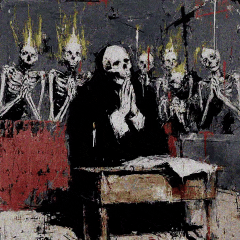
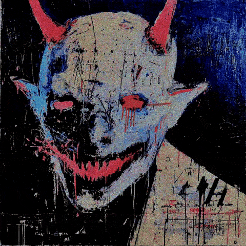
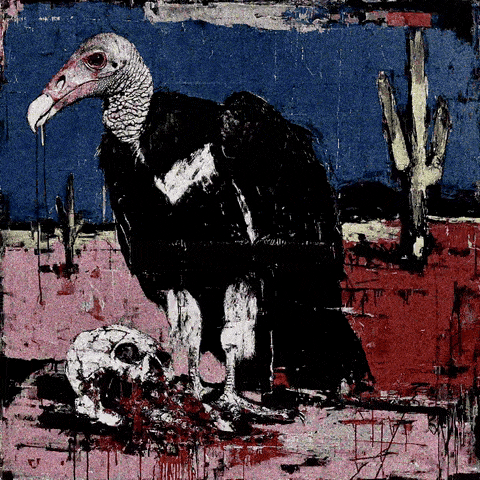
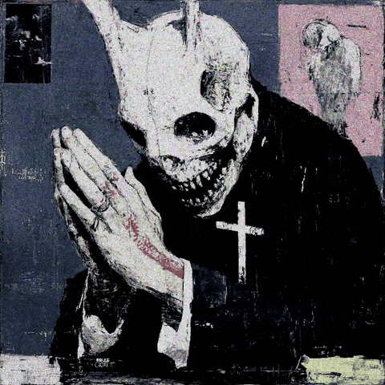
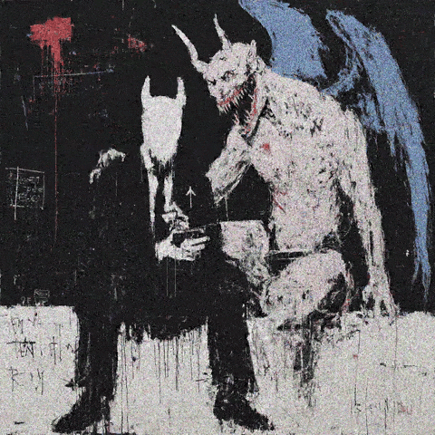
Seventeen recordings were retrieved from the facility. Seventeen personnel were assigned to review them. As of the date of this notice, none of the seventeen have submitted their reports. None have returned calls. Three have not been seen since the assignment was issued.
The recordings themselves remain intact. They have been viewed, in part, by members of the oversight committee. The committee has since voted to suspend all further review. The vote was unanimous. No explanation was provided.
What appears in the footage cannot be classified under any existing framework. It is not an object. It is not a person. It does not move between frames — it is simply present in some frames and absent in others, with no observable transition.
The public is advised to remain calm. The public is advised not to seek out this archive. The public is advised that certain images, once seen, cannot be unseen — and that this is not a metaphor.
"There is no safe distance from what is in these recordings. There is only the distance between those who have seen it and those who have not. That distance is closing."
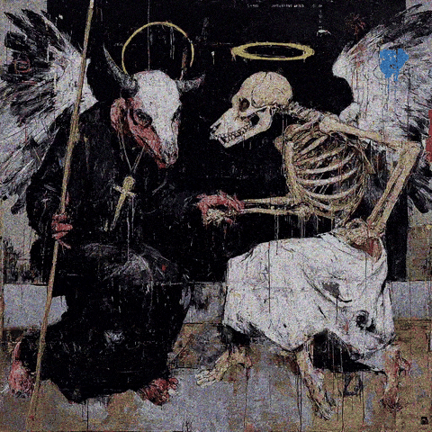
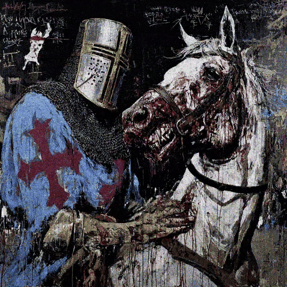
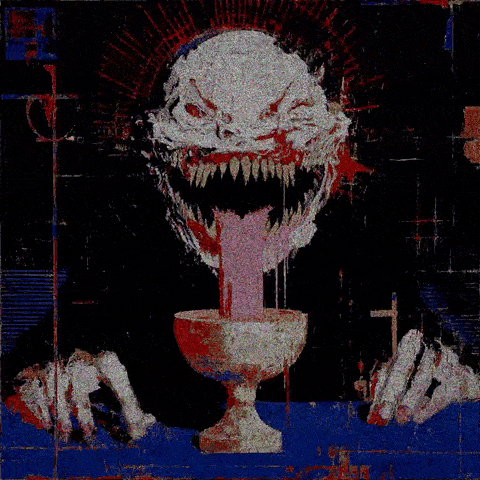
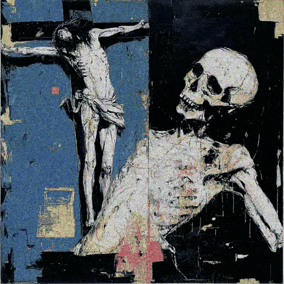
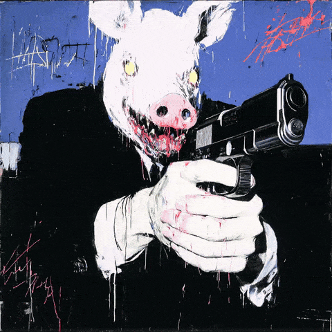